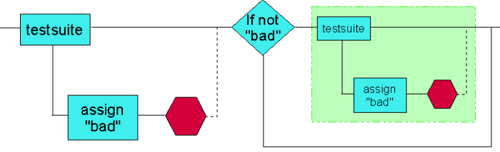

Delay Binning III - Assign Variables and Activate Overon Enable
One potential drawback with Solution II - Assign Variables to Failing Parts is that if the rest of your testflow contains several match loops, for example, you waste time waiting for failing sites within the match loops. The figure below offers a solution to this.

If a device fails testsuite 1, it is assigned the variable "bad" and is binned, but with Overon Enabled activated. This ensures the part is kept alive. For every subsequent testsuite an if...then condition is inserted which sets the condition - if "bad" then bypass this testsuite. The subsequent testsuites may themselves produce failing sites and so must contain the branch that assigns variable "bad" and then bins the part with Overon Enabled activated.
In some cases, however, the previous solutions are not adequate.
Functional changes
- Introduced before SmarTest 6.3.2